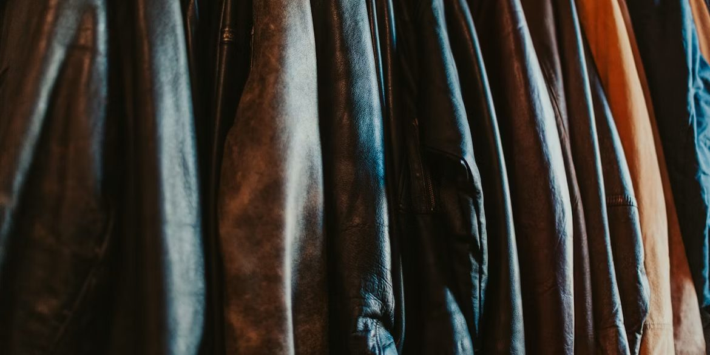
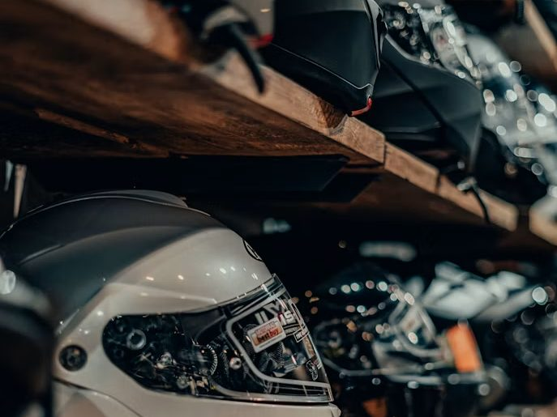

EQ-01Head
Full face helmet, vented
Ventilation matters more than weight at equatorial midday. A quiet helmet that cooks you is the wrong helmet.
- Use
- Highway and mixed
- Watch for
- Vent count and exhaust ports
- Replace
- After any impact
Field tested

05 Frontier Index
Equipment, motorcycle listings and buying guidance, tested rather than sponsored.
Everything here has either been used on a route or inspected in person. Where we have not tested something we say so, and where a price moves with the exchange rate we say that too.
Covered in this section
EQ-01Head
Ventilation matters more than weight at equatorial midday. A quiet helmet that cooks you is the wrong helmet.
Field tested
EQ-02Wet weather
Survives a full season if the seams are taped and it goes over armour rather than under it. Packs smaller than a one piece.
Field tested
EQ-03Luggage
Cheaper, lighter and more waterproof than hard cases, and it does not change the width of the bike in traffic.
Field tested
EQ-04Tyres
For riders who meet murram occasionally rather than daily. A knobbly tyre used mostly on tarmac is a braking problem.
Field tested
EQ-05Tools
The single highest value item per gram carried. Practise on a dead tyre at home before you need it on a shoulder.
Field tested
EQ-06Visibility
We have not run a controlled comparison. Any rated vest beats none, and the one you actually wear beats the better one you leave at home.
Untested
Machines we have inspected or, where marked, only seen. Frontier Moto does not broker sales and holds no stock. These are notes on condition, not offers.
ML-118
Service history present, chain set recent, tyres at half.
ML-121
Higher mileage, fork seals weeping, otherwise sound.
ML-124
Working machine, honest wear, priced accordingly.
ML-127
Low mileage, no local service history, parts lead time is the risk.

A helmet is the one item on this page where used is the wrong economy. It absorbs an impact once, the damage that matters is inside the shell where you cannot see it, and a resale price tells you nothing about whether it has already done its job. Everything else in a loadout can be bought second hand and judged on wear. Storage counts too: a shell left in sunlight or hung on a mirror ages faster than the date stamp inside it suggests.
Buying guide
The order to check things in, so that a fault ends the inspection before you waste an hour.
Gear
Tested through a full set of long rains, including the two that did not make it.
Helmets
A helmet rated for European weather behaves differently at midday on the equator.
Entries marked in preparation are planned and drafted but not published. They are listed so the scope of the section is honest rather than to imply a page exists.